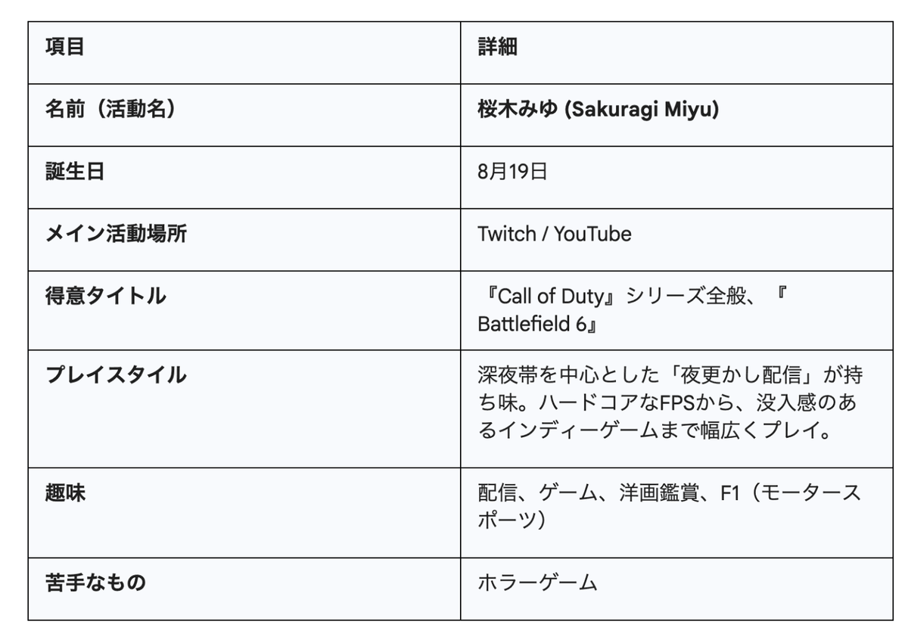

「新しい時代の楽しいイベント from OSAKA」をミッションに掲げ、イベント企画・タレントマネジメント・教育事業を展開する株式会社PACkage（本社：大阪府箕面市、代表取締役社長：山口 勇、以下PACkage）は、運営する「OsakaPNG」のタレント部門に、ストリーマー「桜木みゆ（以降、みゆ）」が、2025年12月1日より再加入することをお知らせいたします。
みゆは、かつて同チームにて『Call of Duty』シリーズを中心に精力的な活動を行い、その親しみやすいキャラクターと確かなプレイスキルで多くのファンに支持されていました。2024年3月の契約満了による卒業から約1年半、充電期間を経てパワーアップした彼女が、記録的ヒットとなっている『Battlefield 6』や『Call of Duty』新作のリリースラッシュに沸く2025年のeスポーツシーンに帰還します。

■再加入の背景：関西の「リージョナル・フォートレス」強化とFPS市場への攻勢
PACkageは、創業以来「Player, Audience, Creator（PAC）」の三位一体のエコシステム構築を推進しており、特に関西地域におけるeスポーツコミュニティのハブとしての役を担っています。
2025年10月に発売された『Battlefield 6』は、発売初月で2025年最大のヒットを記録し、FPS市場はかつてない盛り上がりを見せています。この好機において、FPSタイトルに深い造詣を持ち、ファンとのエンゲージメント構築に長けたみゆを再びチームに迎え入れることで、OsakaPNGの発信力を強化し、関西発の熱狂を全国へ届ける体制を整えました。
■タレントプロフィール

■本人コメント：復帰への想い
「またこのチームに帰ってきちゃいました！Call of Dutyを主軸にFPSをがっつり！でも最近はインディーゲームの沼にも沈んでます。深夜にふらっと出現するタイプなので、夜更かし勢のみなさん、ぜひ配信にあそびにきてください！」
■今後の活動ロードマップ
復帰後は、以下のスケジュールで活動を展開する予定です。
復帰記念、OsakaPNG 女子企画配信（2025年12月1日 21:00～）:
PACFES Vol.7 への出演（2026年春 予定）:
PACkage主催の大型イベント「PACFES」への出演が内定。ファンとの交流イベントを実施予定。
地域連携イベント:
大阪府下のeスポーツ施設や、PACkageが連携する専門学校を始めとする場所でのゲスト講師・イベントMCとしての活動。
【公式リンク】
X (旧Twitter): https://x.com/MuZe_77
Twitch: https://www.twitch.tv/muze_77
YouTube: https://www.youtube.com/@miyu_channel
Instagram: https://www.instagram.com/muze_777/#
OsakaPNG 公式サイト: https://pngesports.com
■株式会社PACkageについて
「新しい時代の楽しいイベント from OSAKA」をコンセプトに、eスポーツを中心としたイベント企画・運営、タレントマネジメント、教育事業を手掛ける関西のリーディングカンパニーです。大阪府eスポーツ連合との連携や、学生ベンチャーとしての柔軟な発想を武器に、若者から高齢者まで幅広い層にeスポーツの魅力を届けています。
【会社概要】
社名：株式会社PACkage
代表者：代表取締役社長 山口 勇
設立：2018年2月6日
資本金：2,230万円
所在地：大阪府箕面市粟生間谷東2-24-5
事業拠点：大阪府池田市豊島南1-15-17
URL：https://package-inc.com/
【本件に関するお問い合わせ先】
株式会社PACkage 広報担当
MAIL：info@package-inc.com